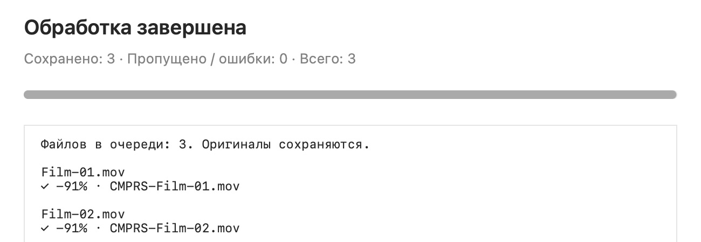

Уже там,
где ваши файлы.
Выделите одно видео или несколько. Запустите CMPRS из «Быстрых действий».
Сожмите сразу несколько видео.
В привычном Finder. Без лишних настроек.
Apple Silicon · macOS 13+ · Без подписки
МЕНЬШЕ РУТИНЫ
CMPRS сохраняет разрешение, частоту кадров и поддерживаемые глубину цвета и цветность. Профиль Ironclad берёт сжатие на себя.
Выделите одно видео или несколько. Запустите CMPRS из «Быстрых действий».
Готовые MOV появятся в той же папке с префиксом CMPRS-. Исходники останутся на месте.
Без загрузки в облако, аккаунта и очереди на сервере. Обработка идёт на компьютере.
ОДНО ДЕЙСТВИЕ
Выберите файлы, запустите сжатие
и займитесь своими делами.

ПРОСТО НАЧАТЬ
Откройте DMG, запустите установщик и нажмите «Установить».
Выделите видео в Finder. Одно, десять или всю нужную подборку.
Быстрые действия → CMPRS Ironclad 100%. Готовые MOV — рядом.
ОСВОБОДИТЕ МЕСТО ДЛЯ НОВОГО
Версия 1.0.5 · Apple Silicon · macOS 13 и новее
Подписано Developer ID · Нотарифицировано Apple
Посмотреть исходный кодСжатие выполняется с потерями. HDR, Dolby Vision, прозрачность и неподдерживаемые форматы пропускаются с объяснением. Если результат не стал меньше, новая копия не сохраняется. Некоторые профессиональные профили H.264 поддерживаются не всеми проигрывателями.